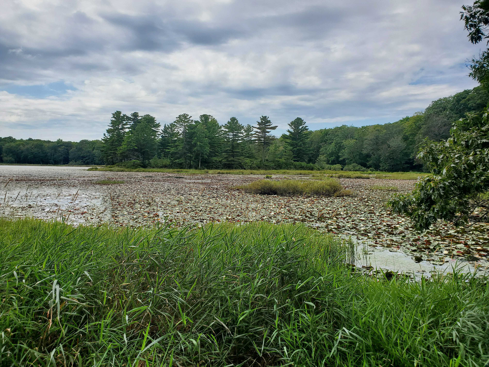
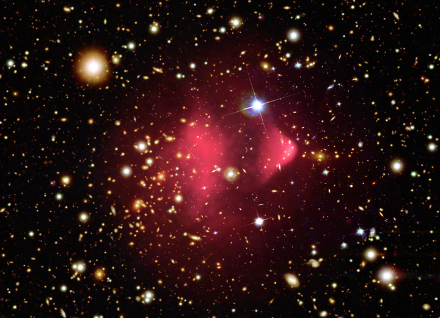
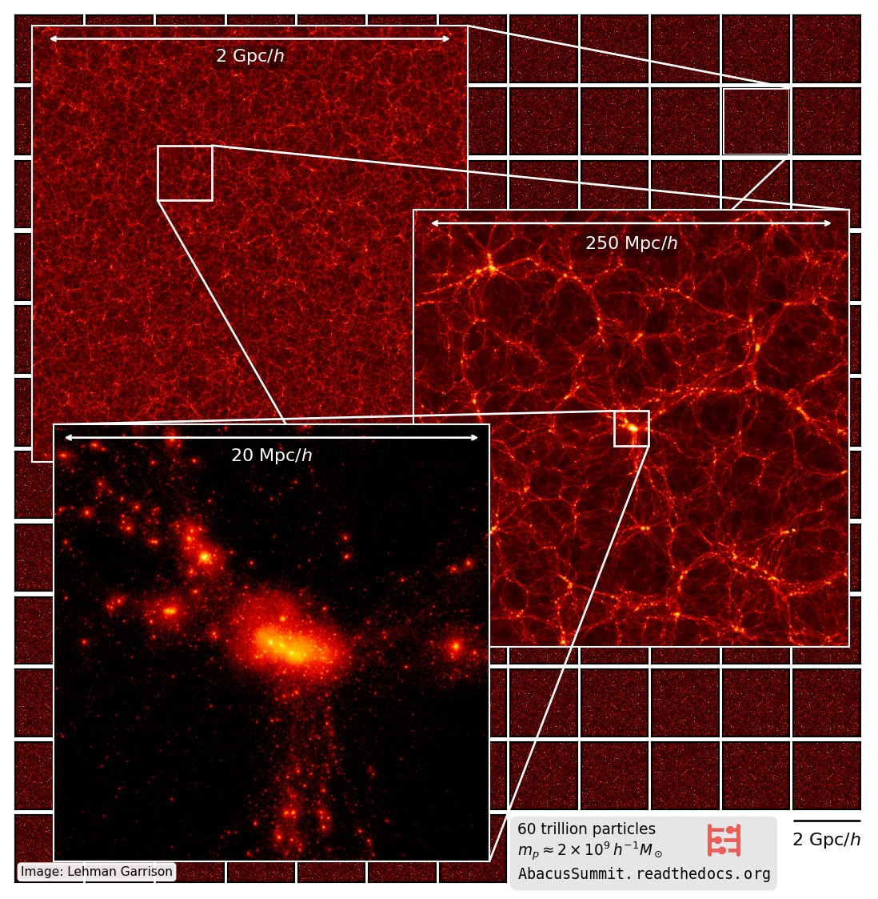
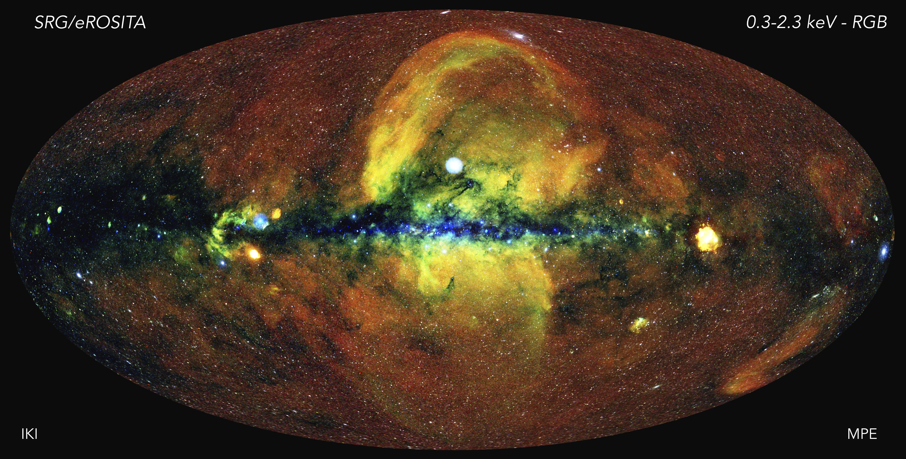
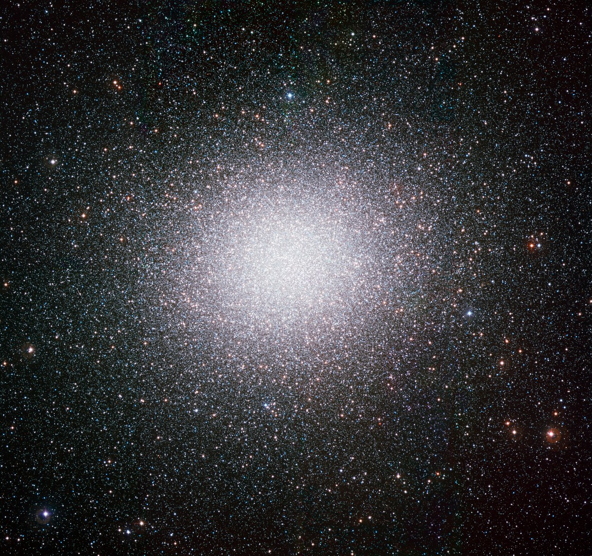
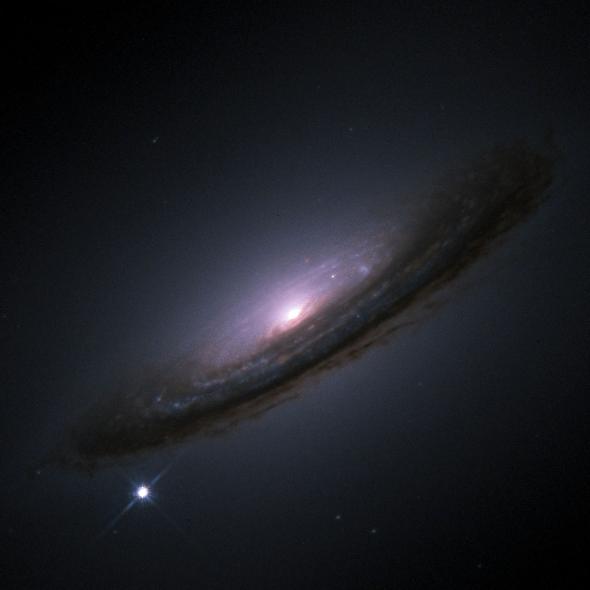
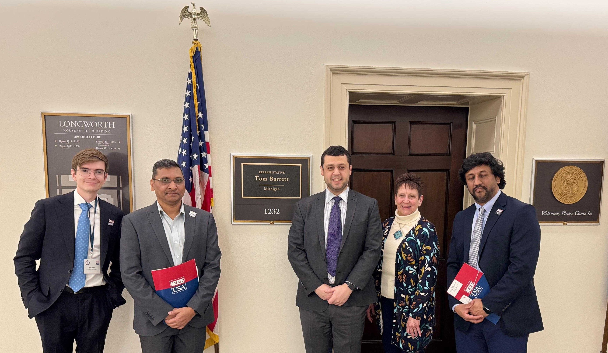
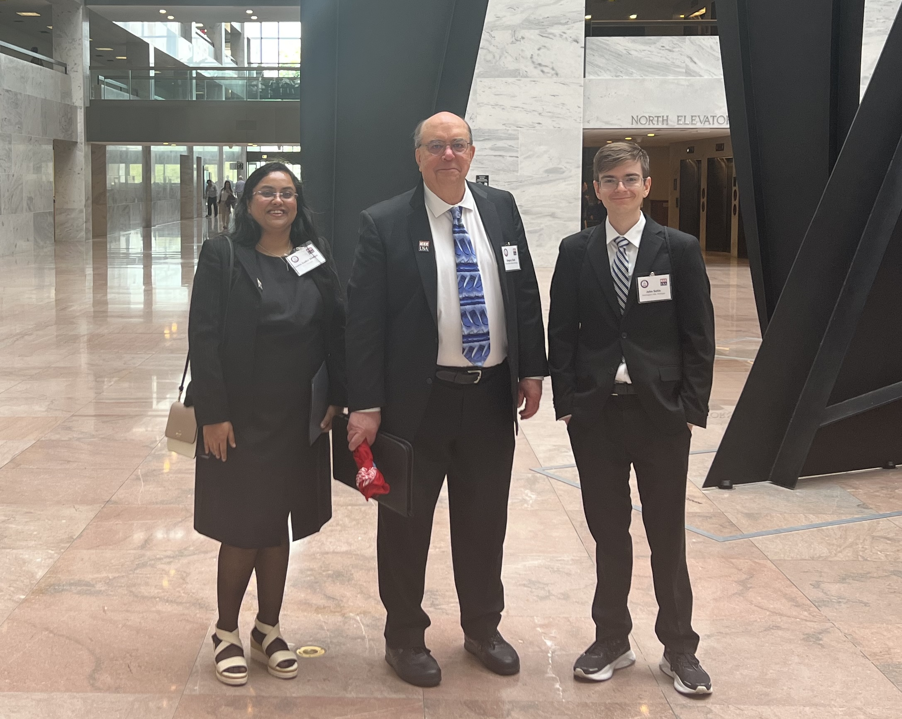
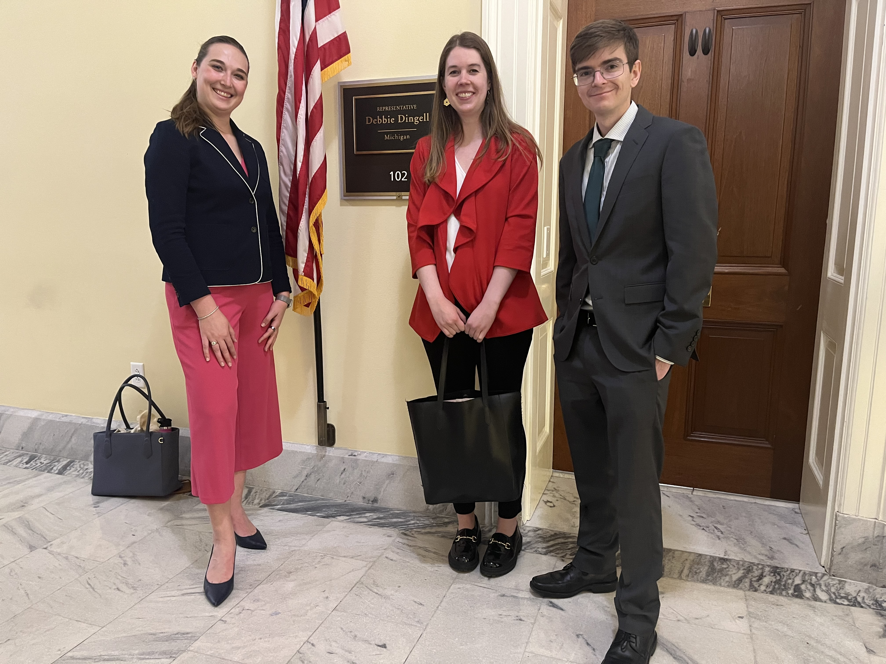

I am a sixth year PhD candidate at Johns Hopkins University, studying astronomy and astrophysics. My thesis research is on applying machine learning methods to galaxy cluster cosmology. More generally, my research interest is in applying advanced data analysis methods, especially machine learning, to problems in cosmology. In the Fall of 2023, I was a pre-doctoral fellow at the Flatiron Institute.
Outside of research, I have served as representative for my department in the GRO and as a Maryland Space Grant Observatory Fellow. I am now serving as a union steward for the graduate students in my department, as well as a Physics and Astronomy Graduate Students Space Telescope Science Institute Liaison.
I have long history of interest in science policy, and in public policy more generally. I am currently a Science Policy Coordinator for the Science Policy and Diplomacy Group at Johns Hopkins. As a member I have participated in a Congressional Visit Day, I co-authored a policy brief advocating for reforming immigration policy for advanced STEM degree holders, "International STEM Graduate Students: A Key to Strengthening the American Economy and Building Competitiveness", published in Journal of Science Policy and Governance, and I recently hosted a Science Policy and Consulting Career Panel. I have participated in multiple Congressional Visit Days with other professional societies, including the "IEEE" and the "American Astronomical Society", where I have advocated for improved science funding and policies to strengthen the scientific workforce. I wrote for the Michigan Journal of International Affairs (1, 2, 3, 4) and competed, as well as judged, public forum debate.
Research Projects & Publications
I have worked on a wide variety of research projects, but I have remained consistently interested in data analysis and the interface between theory and data. I enjoy learning new data analysis methods and applying them to interesting problems. I am no stranger to switching research areas or throwing myself into a totally unfamiliar subject area (especially different areas of observational cosmology!), and I think that shows in the list of projects below. I am dedicated to seeing my projects to completion, as demonstrated by the publication list in my CV.

Estimating Galaxy Cluster Mass Accretion Rates (2022-2024)
As the Universe ages, galaxy clusters grow in mass by incorporating neighboring gas, galaxies, and galaxy clusters. This process can visibly disturb the otherwise relaxed galaxy clusters, and biases measurements of galaxy cluster mass. Unfortunately, mass accretion history is very difficult to measure quantitatively. I am recently developed a deep learning model, using simulated cluster observations from the MillenniumTNG simulation, that can estimate the mass accretion rate of a galaxy cluster from X-ray and thermal SZ observations. This model also provides uncertainties for those estimates. Interpretability analysis suggests that the model is using a combination of radial profile information in the cluster and cluster asymmetry.
J. Soltis, M. Ntampaka, B. Diemer, J. ZuHone, S. Bose, A. M. Delgado, B. Hadzhiyska, C. Hernandez-Aguayo, D. Nagai, H. Trac. “A Multi-Wavelength Technique for Estimating Galaxy Cluster Mass Accretion Rates”, arXiv preprint (2024). NASA/ADS link.
Image of combined Optical and X-ray observations of two colliding clusters, including the famous "Bullet Cluster". Credit: X-ray: NASA/CXC/CfA/M.Markevitch et al.; Optical: NASA/STScI; Magellan/U.Arizona/D.Clowe et al.

Testing the Robustness of Mass Accretion Histories in Cosmological Simulations (2023-2024)
Cosmological simulations are an extremely powerful tool for studying the Universe. They allow us to numerically probe different cosmological models, astrophysical models, and their interactions. Computational limitations require us to make approximations in our calculations, and these approximations introduce non-physical artifacts into our simulations. Generally, it is difficult to characterize the robustness of cosmological simulations. We can approach this problem, however, by starting with a simplified case. We can simulate scale-free cosmologies, mock-Universes where we expect there to be only one relevant scale. In this scenario, any dimensionless statistic can be rescaled by this one relevant scaling such that it is self-similar. In the case of halo mass accretion histories, what I am interested in, this means that that the halo mass accretion history for a rescaled mass at one time ought to be the same as the halo mass accretion history for the same rescaled mass at another time. When the rescaled mass accretion histories don't converge to the same value, we know the simulation is not robust. Using this concept, I worked with Lehman Garrison at the Flatiron Institute to test robustness by probing the self-similarity of mass accretion histories of dark matter halos in scale-free Abacus N-body simulations. Similar work has been done on other statistics (e.g., Maleubre et. al. 2023). This work was done during my time as a CCA Pre-doctoral Fellow.
J. Soltis, L. Garrison. “Self-Similar Mass Accretion History in Scale-Free Simulations”, Monthly Notices of the Royal Astronomical Society, 532, 2, 1729-1743 (2024). NASA/ADS link.
Image from the Abacus Summit suite of simulations. Credit: The AbacusSummit Team. Image compressed into a jpg format, see the original for the full sized image.

Predicting Follow-Up Observations of Galaxy Clusters Using Machine Learning (2021-2022)
Galaxy Cluster observations are expensive and time consuming. With the recently launched X-ray telescope, eROSITA, we will observe an estimated 100,000 clusters. This is roughly a factor of two more than we can estimate with the current state of the art, Chandra. To answer many of the pressing questions in galaxy cluster comsology, we need the longer observation time and finer spatial resolution of Chandra. In this project I developed a machine learning convolutional neural network model, trained on simulations, that could predict morphologically accurate longer duration, noise-free observations of clusters given an eROSITA observations as an input. These predicted observations could then be used to evaluate whether or not to perform a follow-up observation.
J. Soltis, M. Ntampaka, J. Wu, J. ZuHone, A. Evrard, A. Farahi, M. Ho, D. Nagai. “A Machine Learning Approach to Enhancing eROSITA Observations”, The Astrophysical Journal, 940, 1, 60 (2022). NASA/ADS link.
The SRG/eROSITA all-sky map as a false colour image. Image credit: MPE/IKI.

Measuring H0 using Milky Way Tip of the Red Giant Branch Stars (2019-2020)
Given the current tension between estimates and inferrences of the present-day expansion rate of the Universe, known as the Hubble Constant (H0), there is a great deal of interest in supplying independent determinations of its value. In this project we made one such effort by using Tip of the Red Giant Branch (TRGB) stars in the Milky Way. At the tip of the Red Giant Branch stars undergo a rapid change in luminosity, resulting in a visibly discrete break in the luminosity of stars. Measuring the luminosity of this break, using TRGB stars in Milky Way globular clusters and parallaxes to those clusters, we can then estimate distances to more distance populations and then make an estimate of the Hubble Constant. In this project applied a variety of advanced statistical techniques, including constructing Bayesian Hierarchical model to fit the break of Milky Way TRGB field stars, using Hamiltonian Monte Carlo sampling to estimate that break value, and using a Gaussian Kernel Density to isolate the RGB and TRGB stars of our target Milky Way globular clusters.
J. Soltis, S. Casertano, A. G. Riess. “The Parallax of Omega Centauri Measured from Gaia EDR3 and a Direct, Geometric Calibration of the Tip of the Red Giant Branch and the Hubble Constant”, The Astrophysical Journal, 908, L5 (2021). NASA/ADS link.
Image of Omega Centauri, the largest known globular cluster in our galaxy. TRGB stars from Omega Centauri where used in this study. Image credit: ESO.
Early Detection of Wildfires Using Machine Learning (2018-2019)
Early detection of wildfires is critical to managing them and limiting damage. In this project we sought to build machine learning convolutional neural network model that could detect wilfires early using a network of cameras placed throughout the western United States. I monitored outputs, estimated efficiency of its performance, aided in building its training data set, and participated in meetings with collaborators and potential partners.
When I was there it was known as F.U.E.G.O., but now the open source work has moved to Open Climate Tech. They were also recently awarded a grant for the project, as reported here!
K. Govil, M.L. Welch, J.T. Ball, C.R. Pennypacker, "Preliminary Results from a Wildfire Detection System Using Deep Learning on Remote Camera Images", Remote Sensing, 2020, 12, 166. Link.
Image courtesy of Mike McMillan/USFS, Public domain, via Wikimedia Commons.

Testing Statistical Isotropy with Type Ia Supernovae (2017-2018)
Our Universe is assumed to be statistically isotropic, i.e., the same in all directions given some length scale. This assumption has been tested before and been found to be true, notably in the early Universe using the Cosmic Microwave Background. However, given the current tensions in our cosmological between early and late universe measurements of the Hubble constant and possibly of the clumpiness parameter σ8, as well as the poorly understood properties of dark matter and dark energy, it merited investigating whether or not statistical isotropy holds for the late universe. In this project we tested statistical isotropy using type Ia supernovae residuals, a supernovae variant that a well characterized behavior. I constructed a power spectrum, a two-point correlation function in multipole space, and compared that to a bootstrapping of the data to test the significance of a deviation from statical isotropy. We found no significant evidence of anisotropy on large scales, suggesting the cosmological principle holds for the modern universe.
J. Soltis, A. Farahi, D. Huterer, C. M. Liberato. “Percent-Level Test of Isotropic Expansion Using Type Ia Supernovae”, Physical Review Letters, 122, 091301 (2019). NASA/ADS link.
Image of SN1994D (lower left), a type 1a supernova in galaxy NGC 4526 observed by the Hubble Space Telescope. Image by NASA/ESA, The Hubble Key Project Team and The High-Z Supernova Search Team.
Science Policy Advocacy
I strongly believe that scientists need to actively engage in public policy. Our science education and research give us a useful perspective on a variety of issues facing our country, including everything from science research funding to immigration reform. I am currently a Science Policy Coordinator for the Science Policy and Diplomacy Group at Johns Hopkins. Below I discuss some of the groups I am a member of and their advocacy events I participated in.

Institute of Electrical and Electronics Engineers (IEEE): Congressional Visit Day (April 8-9, 2025)
Michigan members of the IEEE and I visited Senator Gary Peters', Senator Elissa Slotkin's, Representative Tom Barret's, and Representative Haley Stevens' offices to advocate for preserving science funding, reauthorizing the Small Business Innovation Research (SBIR) and Small Business Technology Transfer (STTR) programs, and co-sponsoring the CREATE AI Act and Keep STEM Talent Acts.
.jpg)
Johns Hopkins Science Policy and Diplomacy Group (JHSPDG): Science Policy Coordinator, Policy Brief Co-Author, and Congressional Visit Day (March 20, 2024)
Members of the JHSPDG and I visited 11 congressional offices to advocate for the Keep STEM Talent Act of 2023. The act would remove the green card country cap for advanced STEM degree holding foreign-born graduates of US universities. This would reduce green card application wait times, encouraging these crucially important foreign-born STEM-degree holders to continue contributing to American industries and research institutions. We also published a policy brief on this subject, "International STEM Graduate Students: A Key to Strengthening the American Economy and Building Competitiveness", in the Journal of Science Policy and Governance. I recently became a Science Policy Coordinator for the group, and I am excited to organize new congressional visits and events.
B. E. M. Davis, M. Razavi-Mohseni, J. Soltis, H. N. Zhang, E. W. Kavanagh. “International STEM Graduate Students: A Key to Strengthening the American Economy and Building Competitiveness”, Journal of Science Policy & Governance, Vol. 25, Issue 01 (2024). Link.

Institute of Electrical and Electronics Engineers (IEEE): Congressional Visit Day (April 10-11, 2024)
Two Michigan members of the IEEE and I visited Senator Gary Peters', Senator Debbie Stabenow's, Representative Shri Thanedar's, and Representative Haley Stevens' offices to advocate for improved fully funding the CHIPS and Science Act programs, more robust federal investment in science and technology, the CREATE AI Act, and the Keep STEM Talent Act. We discussed with staffers about the importance of federal investment in research and technology, and about its specific benefits to the state of Michigan. We also discussed how important continued investment in AI research is, and how the CREATE AI Act would give researchers at smaller businesses and universities access to the resources they need to participate in AI research.

American Astronomical Society (AAS): Congressional Visit Day (April 14-17, 2024)
Members of the AAS and I listened to leaders at NASA, the National Science Foundation, the Department of Energy, and the White House Office of Science and Technology Policy discuss the recent updates about their agencies, difficulties with reduced funding, and the importance of the astronomical research community participating in science policy advocacy. We recieved advice and information on how to advocate effectively to Congress from members of the AAS and current and former Congressional staffers. We then visited 7 Congressional offices, meeting with both Members of Congress and staffers to discuss increasing funding for the NASA Science Mission Directorate and the National Science Foundation to bring them more in line with the goals set by the CHIPS and Science Act. A special thank you to my own Congresswoman, Representative Haley Stevens from Michigan's 11th district, who was able to meet with us personally to discuss the importance of federal investment in scientific research and of increasing women's participation and representation in astronomy research.
{kind=link}
{kind=link}
{kind=link}